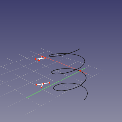
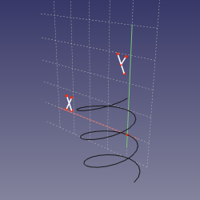
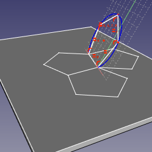

Description
Attachement est un utilitaire pour attacher un objet à un autre. L'objet attaché est lié à l'autre objet, ce qui signifie que si le placement de ce dernier est modifié par la suite, l'objet attaché sera mis à jour à sa nouvelle position.
Disponible dans la version 0.17
Utilisation
- Sélectionnez l'objet à attacher.
- Allez dans le menu Pièce → Attacher ....
- Note: lorsque vous travaillez dans PartDesign et que vous créez des esquisses, des géométries de référence ou des primitives, les étapes 1 et 2 sont inutiles: le dialogue Attachment est automatiquement activé.
- Sous les paramètres Attachment, Non attaché peut être lu. Le premier bouton ci-dessous est étiqueté Sélection ... pour indiquer qu'il attend une sélection dans la vue 3D.
- Sélectionnez un élément de topologie sur l'objet auquel attacher: vertex (sommet), bord (arête) ou face/plan. La géométrie de référence à partir de Conteneurs Part est également sélectionnable.
- L'étiquette du premier bouton adopte maintenant le type de topologie sélectionné. Dans le champ blanc à sa droite, l'objet référencé et son élément sont ajoutés. Par exemple, si une face sur un cube primitif est sélectionnée, le champ affiche Box: Face6.
- Sélectionnez un Mode d' Attachement dans la liste. Les modes disponibles sont filtrés par les références sélectionnées. Attaché avec le mode <mode description> sera affiché sous l'en-tête Attachment.
- Pour obtenir des informations en temps réel sur les modes de pièce jointe, placez la souris au-dessus de l'un des modes de la liste pour afficher une info-bulle.
- Éventuellement, ajoutez jusqu'à 3 autres références en appuyant sur les boutons Reference2, Reference3 et Reference4 et en répétant l'étape 4.
- Définir facultativement un Décalage de la pièce attachée.
- Appuyez sur OK.
Options
Mode d'Attachement
Désactivé
Par défaut, aucune référence sélectionnée.
Normal à un bord (arête)
L'objet est rendu perpendiculaire au bord (arête). La référence vertex (sommet) facultative définit l'emplacement.
- Combinaisons de référence
- Bord (arête)
- Bord (arête), Vertex (sommet)
- Vertex (sommet), Bord (arête)
Alignement O-N-X
Fait correspondre l'origine de l'objet avec le premier sommet référencé, puis aligne sa normale avec l'axe horizontal du plan vers le sommet / le long de la ligne.
- Combinaisons de référence
- sommet, sommet, sommet
- sommet, sommet, arête
- sommet, arête, sommet
- sommet, arête, arête
- sommet, sommet
- sommet, arête
Alignement O-N-Y
Fait correspondre l'origine de l'objet avec le premier sommet référencé et aligne sa normale avec l'axe vertical du plan vers le sommet / le long de la ligne.
- Combinaisons de référence
- sommet, sommet, sommet
- sommet, sommet, arête
- sommet, arête, sommet
- sommet, arête, arête
- sommet, sommet
- sommet, arête
Alignement O-X-Y
Fait correspondre l'origine de l'objet avec le premier sommet référencé et aligne ses axes horizontal et vertical vers le sommet / le long de la ligne.
- Combinaisons de référence
- sommet, sommet, sommet
- sommet, sommet, arête
- sommet, arête, sommet
- sommet, arête, arête
- sommet, sommet
- sommet, arête
Alignement O-X-N
Fait correspondre l'origine de l'objet avec le premier sommet référencé et aligne son axe horizontal et sa normale sur le sommet / le long de la ligne.
- Combinaisons de référence
- sommet, sommet, sommet
- sommet, sommet, arête
- sommet, arête, sommet
- sommet, arête, arête
- sommet, sommet
- sommet, arête
Alignement O-Y-N
Fait correspondre l'origine de l'objet avec le premier sommet référencé et aligne son axe vertical et sa normale vers le sommet / le long de la ligne.
- Combinaisons de référence
- sommet, sommet, sommet
- sommet, sommet, arête
- sommet, arête, sommet
- sommet, arête, arête
- sommet, sommet
- sommet, arête
Alignement O-Y-X
Fait correspondre l'origine de l'objet avec le premier sommet référencé et aligne ses axes vertical et horizontal vers le sommet / le long de la ligne.
- Combinaisons de référence
- sommet, sommet, sommet
- sommet, sommet, arête
- sommet, arête, sommet
- sommet, arête, arête
- sommet, sommet
- sommet, arête
Translation de l'origine
L'origine de l'objet est alignée sur le sommet correspondant. L'orientation est contrôlée par la propriété Placement.
- Combinaisons de référence
- sommet.
XY de l'objet
Le plan est aligné sur le plan local XY de l'objet lié.
- Combinaisons de référence
- Tout, Conique.
XZ de l'objet
Le plan est aligné sur le plan local XZ de l'objet lié.
- Combinaisons de référence
- Tout, Conique.
YZ de l'objet
Le plan est aligné sur le plan local YZ de l'objet lié.
- Combinaisons de référence
- Tout, Conique.
Face Plane
Le plan est positionné pour coïncider avec la face plane.
- Combinaisons de référence
- plan.
Tangent à une surface
Le plan est rendu tangent à la surface en un sommet.
- Combinaisons de référence
- face, sommet
- sommet, face
Frenet NB
Le plan est défini sur des axes normaux-binormaux (NB) de Système de Coordonnées Frenet-Serret au point de la courbure de l'arête le plus proche du sommet (ou défini par la propriété MapPathParameter, si le sommet n'est pas lié). L'origine de l'objet est déplacée au sommet si le sommet est en premier, ou conservée à la courbe si l'arête est en premier. Ce mode est similaire à Normal à une arête , sauf que l'axe X est bien défini.
- Combinaisons de référence
- courbe
- courbe, sommet
- sommet, courbe
-


{kind=link}
Frenet TN
Le plan est défini sur les axes tangente-normale (TN) de Système de Coordonnées Frenet-Serret au point de la courbure de l'arête le plus proche du sommet (ou défini par la propriété MapPathParameter, si le sommet n'est pas lié). L'origine de l'esquisse est déplacée au sommet si le sommet est en premier, ou conservée à la courbe si l'arête est en premier. Effectivement, si la courbe est plane, le plan d'esquisse est le plan de la courbe.
- Combinaisons de référence
- courbe
- courbe, sommet
- sommet, courbe
- 
{kind=link}
Frenet TB
Le plan est défini sur les axes tangente-binormale (TB) de Système de Coordonnées Frenet-Serret au point de la courbure de l'arête le plus proche du sommet (ou défini par la propriété MapPathParameter, si le sommet n'est pas lié). L'origine de l'esquisse est déplacée au sommet si le sommet est en premier, ou conservée à la courbe si l'arête est en premier. Effectivement, si la courbe est plane, le plan d'esquisse est le plan de la courbe.
- Combinaisons de référence
- courbe
- courbe, sommet
- sommet, courbe
- 
{kind=link}
Concentrique
Aligne le plan sur le cercle auscultateur d'une arête. Un lien optionnel vers un sommet définit en quel point.
- Combinaisons de référence
- courbe
- cercle
- courbe, sommet
- cercle, sommet
- sommet, courbe
- sommet, cercle
Section de révolution
Le plan est perpendiculaire à l'arête et l'axe Y correspond à l'axe du cercle auscultateur. Un lien optionnel vers un sommet définit en quel point.
- Combinaisons de référence
- courbe
- cercle
- courbe, sommet
- cercle, sommet
- sommet, courbe
- sommet, cercle
Plan par 3 points
Fait passer le plan XY par trois sommets.
- Combinaisons de référence
- sommet, sommet, sommet
- droite, sommet
- sommet, droite
- droite, droite
Normal à 3 points
Fait passer le plan par les deux premiers sommets, perpendiculairement au plan défini par les 3 sommets.
- Combinaisons de référence
- sommet, sommet, sommet
- droite, sommet
- sommet, droite
- droite, droite
Pliage
Mode spécifique pour le pliage des polyèdres. Sélectionnez les 4 arêtes dans l’ordre : arête pliable, arête de pliage, autre arête de pliage, autre arête pliable. Le plan sera aligné sur le premier pli. Dans l'image ci-dessous, il n'est pas nécessaire que les deux feuilles à plier ensemble soient les mêmes.
- Combinaisons de référence
- droite, droite, droite, droite
- 
{kind=link}
Inertie 2-3
L'objet sera attaché à un plan passant par les deuxième et troisième axes principaux d'inertie (passe par le centre de masse).
- Combinaisons de référence
- Tout
- Tout, Tout
- Tout, Tout, Tout
- Tout, Tout, Tout, Tout
Décalage d'attachement
Le décalage d'attachement est utilisé pour appliquer un décalage linéaire ou rotatif par rapport à l'objet référencé. Il devient actif quand un mode d'attachement autre que Désactivé a été sélectionné.
- X: définit une distance de décalage dans l'axe X de l'objet de référence.
- Y: définit une distance de décalage dans l'axe Y de l'objet de référence.
- Z: définit une distance de décalage dans l'axe Z de l'objet de référence.
- Yaw (tangage): fait pivoter l'objet attaché le long de l'axe Z de l'objet de référence.
- Pitch (lacet): fait pivoter l'objet attaché le long de l'axe Y de l'objet de référence.
- Roll (roulis): fait pivoter l'objet attaché le long de l'axe X de l'objet de référence.
- Retourner les côtés: si coché, le plan XY de l'objet attaché est inversé.
Limitations
Les conteneurs Pièce et Corps ne sont pas supportés. Bien qu'il soit possible d'utiliser Attachement pour les aligner, la pièce attachée ne sera pas paramétriquement liée.